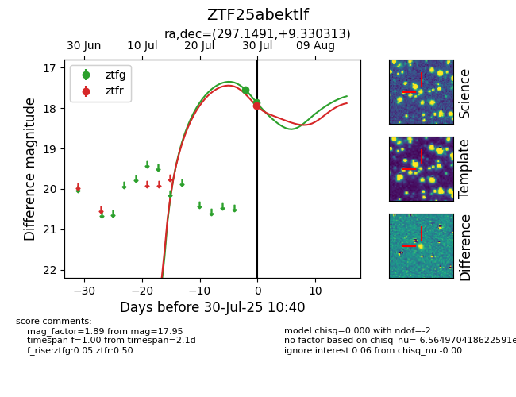

Target ZTF25abektlf at 2025-07-30 10:40, see:
FINK: fink-portal.org/ZTF25abektlf
Lasair: lasair-ztf.lsst.ac.uk/objects/ZTF25abektlf
ALeRCE: alerce.online/object/ZTF25abektlf
alt names
ZTF25abektlf (ztf,fink)
coordinates:
equatorial (ra, dec) = (297.1491,+9.33031)
galactic (l, b) = (47.8830,-8.21202)
photometry
last ztfg=17.86, ztfr=17.95
2 ztfg, 1 ztfr detections
